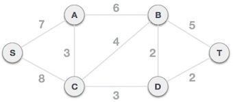
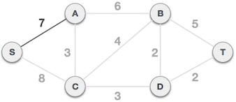
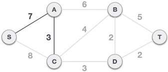
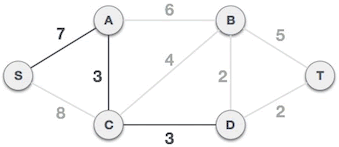
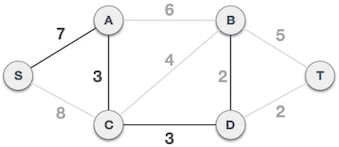
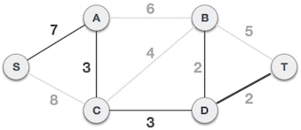
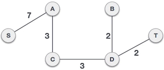

首页 > 编程笔记
prim算法（普里姆算法）详解
了解了什么是最小生成树后，本节为您讲解如何用普里姆（prim）算法查找连通网（带权的连通图）中的最小生成树。
普里姆算法查找最小生成树的过程，采用了贪心算法的思想。对于包含 N 个顶点的连通网，普里姆算法每次从连通网中找出一个权值最小的边，这样的操作重复 N-1 次，由 N-1 条权值最小的边组成的生成树就是最小生成树。
那么，如何找出 N-1 条权值最小的边呢？普里姆算法的实现思路是：
举个例子，下图是一个连通网，使用普里姆算法查找最小生成树，需经历以下几个过程：
1) 将图中的所有顶点分为 A 类和 B 类，初始状态下，A = {}，B = {A, B, C, D, S, T}。
2) 从 B 类中任选一个顶点，假设选择 S 顶点，将其从 B 类移到 A 类，A = {S}，B = {A, B, C, D, T}。从 A 类的 S 顶点出发，到达 B 类中顶点的边有 2 个，分别是 S-A 和 S-C，其中 S-A 边的权值最小，所以选择 S-A 边组成最小生成树，将 A 顶点从 B 类移到 A 类，A = {S, A}，B = {B, C, D, T}。
3) 从 A 类中的 S、A 顶点出发，到达 B 类中顶点的边有 3 个，分别是 S-C、A-C、A-B，其中 A-C 的权值最小，所以选择 A-C 组成最小生成树，将顶点 C 从 B 类移到 A 类，A = {S, A, C}，B = {B, D, T}。
4) 从 A 类中的 S、A、C 顶点出发，到达 B 类顶点的边有 S-C、A-B、C-B、C-D，其中 C-D 边的权值最小，所以选择 C-D 组成最小生成树，将顶点 D 从 B 类移到 A 类，A = {S, A, C, D}，B = {B, T}。
5) 从 A 类中的 S、A、C、D 顶点出发，到达 B 类顶点的边有 A-B、C-B、D-B、D-T，其中 D-B 和 D-T 的权值最小，任选其中的一个，例如选择 D-B 组成最小生成树，将顶点 B 从 B 类移到 A 类，A = {S, A, C, D, B}，B = {T}。
6) 从 A 类中的 S、A、C、D、B 顶点出发，到达 B 类顶点的边有 B-T、D-T，其中 D-T 的权值最小，选择 D-T 组成最小生成树，将顶点 T 从 B 类移到 A 类，A = {S, A, C, D, B, T}，B = {}。
7) 由于 B 类中的顶点全部移到了 A 类，因此 S-A、A-C、C-D、D-B、D-T 组成的是一个生成树，而且是一个最小生成树，它的总权值为 17。
如下是使用普里姆算法在图 1 所示的连通网中查找最小生成树的 C 语言程序：
如下是使用普里姆算法在图 1 所示的连通网中查找最小生成树的 Java 程序：
如下是使用普里姆算法在图 1 所示的连通网中查找最小生成树的 Python 程序：
图 1 连通网中的顶点 A、B、C、D、S、T 分别用 1~6 的数字表示，上面程序的运行结果均为：
普里姆算法查找最小生成树的过程，采用了贪心算法的思想。对于包含 N 个顶点的连通网，普里姆算法每次从连通网中找出一个权值最小的边，这样的操作重复 N-1 次，由 N-1 条权值最小的边组成的生成树就是最小生成树。
那么，如何找出 N-1 条权值最小的边呢？普里姆算法的实现思路是：
- 将连通网中的所有顶点分为两类（假设为 A 类和 B 类）。初始状态下，所有顶点位于 B 类；
- 选择任意一个顶点，将其从 B 类移动到 A 类；
- 从 B 类的所有顶点出发，找出一条连接着 A 类中的某个顶点且权值最小的边，将此边连接着的 A 类中的顶点移动到 B 类；
- 重复执行第 3 步，直至 B 类中的所有顶点全部移动到 A 类，恰好可以找到 N-1 条边。
举个例子，下图是一个连通网，使用普里姆算法查找最小生成树，需经历以下几个过程：

图 1 连通网
图 1 连通网
1) 将图中的所有顶点分为 A 类和 B 类，初始状态下，A = {}，B = {A, B, C, D, S, T}。
2) 从 B 类中任选一个顶点，假设选择 S 顶点，将其从 B 类移到 A 类，A = {S}，B = {A, B, C, D, T}。从 A 类的 S 顶点出发，到达 B 类中顶点的边有 2 个，分别是 S-A 和 S-C，其中 S-A 边的权值最小，所以选择 S-A 边组成最小生成树，将 A 顶点从 B 类移到 A 类，A = {S, A}，B = {B, C, D, T}。

图 2 S-A 边组成最小生成树
图 2 S-A 边组成最小生成树
3) 从 A 类中的 S、A 顶点出发，到达 B 类中顶点的边有 3 个，分别是 S-C、A-C、A-B，其中 A-C 的权值最小，所以选择 A-C 组成最小生成树，将顶点 C 从 B 类移到 A 类，A = {S, A, C}，B = {B, D, T}。

图 3 A-C 边组成最小生成树
图 3 A-C 边组成最小生成树
4) 从 A 类中的 S、A、C 顶点出发，到达 B 类顶点的边有 S-C、A-B、C-B、C-D，其中 C-D 边的权值最小，所以选择 C-D 组成最小生成树，将顶点 D 从 B 类移到 A 类，A = {S, A, C, D}，B = {B, T}。

图 4 C-D 边组成最小生成树
图 4 C-D 边组成最小生成树
5) 从 A 类中的 S、A、C、D 顶点出发，到达 B 类顶点的边有 A-B、C-B、D-B、D-T，其中 D-B 和 D-T 的权值最小，任选其中的一个，例如选择 D-B 组成最小生成树，将顶点 B 从 B 类移到 A 类，A = {S, A, C, D, B}，B = {T}。

图 5 D-B 边组成最小生成树
图 5 D-B 边组成最小生成树
6) 从 A 类中的 S、A、C、D、B 顶点出发，到达 B 类顶点的边有 B-T、D-T，其中 D-T 的权值最小，选择 D-T 组成最小生成树，将顶点 T 从 B 类移到 A 类，A = {S, A, C, D, B, T}，B = {}。

图 6 D-T 边组成最小生成树
图 6 D-T 边组成最小生成树
7) 由于 B 类中的顶点全部移到了 A 类，因此 S-A、A-C、C-D、D-B、D-T 组成的是一个生成树，而且是一个最小生成树，它的总权值为 17。

图 7 最小生成树
图 7 最小生成树
普里姆算法的具体实现
接下来，我们将给出实现普里姆算法的 C、Java、Python 程序，程序中有详尽的注释，您可以借助编译器一边运行程序一边观察程序的执行过程，彻底搞清楚普里姆算法是如何找到最小生成树的。如下是使用普里姆算法在图 1 所示的连通网中查找最小生成树的 C 语言程序：
#include<stdio.h>
#define V 6 // 记录图中顶点的个数
typedef enum { false, true } bool;
//查找权值最小的、尚未被选择的顶点，key 数组记录了各顶点之间的权值数据，visited数组记录着各个顶点是否已经被选择的信息
int min_Key(int key[], bool visited[])
{
int min = 2147483647, min_index; //遍历 key 数组使用，min 记录最小的权值，min_index 记录最小权值关联的顶点
//遍历 key 数组
for (int v = 0; v < V; v++) {
//如果当前顶点为被选择，且对应的权值小于 min 值
if (visited[v] == false && key[v] < min) {
//更新 min 的值并记录该顶点的位置
min = key[v];
min_index = v;
}
}
//返回最小权值的顶点的位置
return min_index;
}
//输出最小生成树
void print_MST(int parent[], int cost[V][V])
{
int minCost = 0;
printf("最小生成树为：\n");
//遍历 parent 数组
for (int i = 1; i < V; i++) {
//parent 数组下标值表示各个顶点，各个下标对应的值为该顶点的父节点
printf("%d - %d wight:%d\n", parent[i] + 1, i + 1, cost[i][parent[i]]);//由于数组下标从 0 开始，因此输出时各自 +1
//统计最小生成树的总权值
minCost += cost[i][parent[i]];
}
printf("总权值为：%d", minCost);
}
//根据用户提供了图的信息（存储在 cost 数组中），寻找最小生成树
void find_MST(int cost[V][V])
{ //key 数组用于记录 B 类顶点到 A 类顶点的权值
//parent 数组用于记录最小生成树中各个顶点父节点的位置，便于最终生成最小生成树
//visited 数组用于记录各个顶点属于 A 类还是 B 类
int parent[V], key[V];
bool visited[V];
// 初始化 3 个数组
for (int i = 0; i < V; i++) {
key[i] = 2147483647; // 将 key 数组各个位置设置为无限大的数
visited[i] = false; // 所有的顶点全部属于 B 类
parent[i] = -1; // 所有顶点都没有父节点
}
// 选择 key 数组中第一个顶点，开始寻找最小生成树
key[0] = 0; // 该顶点对应的权值设为 0
parent[0] = -1; // 该顶点没有父节点
// 对于 V 个顶点的图，最需选择 V-1 条路径，即可构成最小生成树
for (int x = 0; x < V - 1; x++)
{
// 从 key 数组中找到权值最小的顶点所在的位置
int u = min_Key(key, visited);
// 该顶点划分到 A 类
visited[u] = true;
// 由于新顶点加入 A 类，因此需要更新 key 数组中的数据
for (int v = 0; v < V; v++)
{
// 如果类 B 中存在到下标为 u 的顶点的权值比 key 数组中记录的权值还小，表明新顶点的加入，使得类 B 到类 A 顶点的权值有了更好的选择
if (cost[u][v] != 0 && visited[v] == false && cost[u][v] < key[v])
{
// 更新 parent 数组记录的各个顶点父节点的信息
parent[v] = u;
// 更新 key 数组
key[v] = cost[u][v];
}
}
}
//根据 parent 记录的各个顶点父节点的信息，输出寻找到的最小生成树
print_MST(parent, cost);
}
// main function
int main()
{
int p1, p2;
int wight;
int cost[V][V] = { 0 };
printf("输入图（顶点到顶点的路径和权值)：\n");
while (1) {
scanf("%d %d", &p1, &p2);
//如果用户输入 -1 -1，表示输入结束
if (p1 == -1 && p2 == -1) {
break;
}
scanf("%d", &wight);
cost[p1 - 1][p2 - 1] = wight;
cost[p2 - 1][p1 - 1] = wight;
}
// 根据用户输入的图的信息，寻找最小生成树
find_MST(cost);
return 0;
}
如下是使用普里姆算法在图 1 所示的连通网中查找最小生成树的 Java 程序：
import java.util.Scanner;
public class prim {
static int V = 6;
public static int min_Key(int []key,boolean []visited) {
//遍历 key 数组使用，min 记录最小的权值，min_index 记录最小权值关联的顶点
int min = 2147483647,min_index = 0;
//遍历 key 数组
for (int v = 0; v < V; v++) {
//如果当前顶点为被选择，且对应的权值小于 min 值
if (visited[v] == false && key[v] < min) {
//更新 min 的值并记录该顶点的位置
min = key[v];
min_index = v;
}
}
//返回最小权值的顶点的位置
return min_index;
}
public static void print_MST(int []parent, int [][]cost) {
int minCost = 0;
System.out.println("最小生成树为：");
//遍历 parent 数组
for (int i = 1; i < V; i++) {
//parent 数组下标值表示各个顶点，各个下标对应的值为该顶点的父节点
System.out.println((parent[i]+1)+" - "+(i+1)+" wight:"+cost[i][parent[i]]);//由于数组下标从 0 开始，因此输出时各自 +1
//统计最小生成树的总权值
minCost += cost[i][parent[i]];
}
System.out.print("总权值为："+minCost);
}
public static void find_MST(int [][]cost) {
//key 数组用于记录 B 类顶点到 A 类顶点的权值
//parent 数组用于记录最小生成树中各个顶点父节点的位置，便于最终生成最小生成树
//visited 数组用于记录各个顶点属于 A 类还是 B 类
int []parent = new int[V];
int []key = new int[V];
boolean []visited=new boolean[V];
// 初始化 3 个数组
for (int i = 0; i < V; i++) {
key[i] = 2147483647; // 将 key 数组各个位置设置为无限大的数
visited[i] = false; // 所有的顶点全部属于 B 类
parent[i] = -1; // 所有顶点都没有父节点
}
// 选择 key 数组中第一个顶点，开始寻找最小生成树
key[0] = 0; // 该顶点对应的权值设为 0
parent[0] = -1; // 该顶点没有父节点
// 对于 V 个顶点的图，最需选择 V-1 条路径，即可构成最小生成树
for (int x = 0; x < V - 1; x++)
{
// 从 key 数组中找到权值最小的顶点所在的位置
int u = min_Key(key, visited);
// 该顶点划分到 A 类
visited[u] = true;
// 由于新顶点加入 A 类，因此需要更新 key 数组中的数据
for (int v = 0; v < V; v++)
{
// 如果类 B 中存在到下标为 u 的顶点的权值比 key 数组中记录的权值还小，表明新顶点的加入，使得类 B 到类 A 顶点的权值有了更好的选择
if (cost[u][v] != 0 && visited[v] == false && cost[u][v] < key[v])
{
// 更新 parent 数组记录的各个顶点父节点的信息
parent[v] = u;
// 更新 key 数组
key[v] = cost[u][v];
}
}
}
//根据 parent 记录的各个顶点父节点的信息，输出寻找到的最小生成树
print_MST(parent, cost);
}
public static void main(String[] args) {
int [][]cost = new int[V][V];
System.out.println("输入图（顶点到顶点的路径和权值)：");
Scanner sc = new Scanner(System.in);
while (true) {
int p1 = sc.nextInt();
int p2 = sc.nextInt();
// System.out.println(p1+p2);
if (p1 == -1 && p2 == -1) {
break;
}
int wight = sc.nextInt();
cost[p1-1][p2-1] = wight;
cost[p2-1][p1-1] = wight;
}
// 根据用户输入的图的信息，寻找最小生成树
find_MST(cost);
}
}
如下是使用普里姆算法在图 1 所示的连通网中查找最小生成树的 Python 程序：
V = 6 #图中顶点的个数
cost = [[0]*V for i in range(V)]
print("输入图（顶点到顶点的路径和权值)：")
while True:
li = input().split()
p1 = int(li[0])
p2 = int(li[1])
if p1 == -1 and p2 == -1:
break
wight = int(li[2])
cost[p1-1][p2-1] = wight
cost[p2-1][p1-1] = wight
#查找权值最小的、尚未被选择的顶点，key 列表记录了各顶点之间的权值数据，visited列表记录着各个顶点是否已经被选择的信息
def min_Key(key,visited):
#遍历 key 列表使用，min 记录最小的权值，min_index 记录最小权值关联的顶点
min = float('inf')
min_index = 0
#遍历 key 列表
for v in range(V):
#如果当前顶点为被选择，且对应的权值小于 min 值
if visited[v] == False and key[v]<min:
#更新 min 的值并记录该顶点的位置
min = key[v]
min_index=v
#返回最小权值的顶点的位置
return min_index
#输出最小生成树
def print_MST(parent,cost):
minCost=0
print("最小生成树为：")
#遍历 parent 列表
for i in range(1,V):
#parent 列表下标值表示各个顶点，各个下标对应的值为该顶点的父节点
print("%d - %d wight:%d"%(parent[i]+1, i+1, cost[i][parent[i]]))
#统计最小生成树的总权值
minCost = minCost + cost[i][parent[i]];
print("总权值为：%d"%(minCost))
#根据用户提供了图的信息（存储在 cost 列表中），寻找最小生成树
def find_MST(cost):
#key 列表用于记录 B 类顶点到 A 类顶点的权值
#parent 列表用于记录最小生成树中各个顶点父节点的位置，便于最终生成最小生成树
#visited 列表用于记录各个顶点属于 A 类还是 B 类
parent = [-1]*V
key = [float('inf')]*V
visited = [False]*V
# 选择 key 列表中第一个顶点，开始寻找最小生成树
key[0] = 0
parent[0]= -1
# 对于 V 个顶点的图，最需选择 V-1 条路径，即可构成最小生成树
for x in range(V-1):
# 从 key 列表中找到权值最小的顶点所在的位置
u = min_Key(key,visited)
visited[u] = True
# 由于新顶点加入 A 类，因此需要更新 key 列表中的数据
for v in range(V):
# 如果类 B 中存在到下标为 u 的顶点的权值比 key 列表中记录的权值还小，表明新顶点的加入，使得类 B 到类 A 顶点的权值有了更好的选择
if cost[u][v] !=0 and visited[v] == False and cost[u][v] < key[v]:
# 更新 parent 列表记录的各个顶点父节点的信息
parent[v] = u
# 更新 key 列表
key[v] = cost[u][v]
# 根据 parent 记录的各个顶点父节点的信息，输出寻找到的最小生成树
print_MST(parent,cost);
find_MST(cost)
图 1 连通网中的顶点 A、B、C、D、S、T 分别用 1~6 的数字表示，上面程序的运行结果均为：
输入图（顶点到顶点的路径和权值)：
1 5 7
1 3 3
5 3 8
1 2 6
2 3 4
2 4 2
3 4 3
2 6 5
4 6 2
-1 -1
最小生成树为：
4 - 2 wight:2
1 - 3 wight:3
3 - 4 wight:3
1 - 5 wight:7
4 - 6 wight:2
总权值为：17
关注公众号「站长严长生」，在手机上阅读所有教程，随时随地都能学习。内含一款搜索神器，免费下载全网书籍和视频。

微信扫码关注公众号